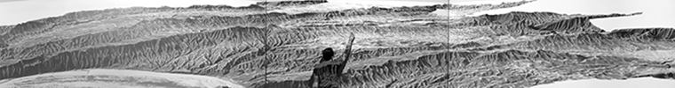
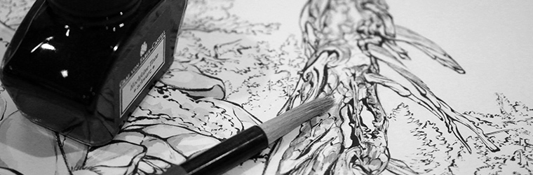

Introduction
My research explores the role of creativity in traditional and digital design processes for landscape architects. With computer modeling and visualization we are better able to understand and represent landscape dynamics. However, interacting with computers can be very unintuitive and can inhibit or transform creativity. I am exploring whether advances in digital design, tangible user interfaces, and computer-aided manufacturing can enable a more intuitive design process that tightly couples creativity and rigorous analysis.
I am a member of the NCSU Open Source Geospatial Research and Education Lab in the Center for Geospatial Analytics where we are developing Tangible Landscape, a system that couples a physical landscape model with a digital model through a real-time cycle of 3d scanning, geospatial analytics, and projection. By bridging the analog - digital divide we hope to make geospatial modeling more intuitive and creative.

Education
North Carolina State University, PhD in Design candidate
University of Oxford, Master of Philosophy in Geography and the Environment
Havard Graduate School of Design, Master of Landscape Architecture
Sewanee, the University of the South, Bachelor of Arts in Art History

Contact
Email: baharmon@ncsu.edu
Follow me on
ResearchGate,
Behance,
GitHub, and
Academia.
Follow NCSU OSGeoREL on
Google+,
YouTube, and
GitHub.